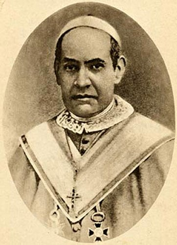

QUASE JESU�TA � UM MISSION�RIO
PROCURANDO O CAMINHO
Sua ida a Roma n�o era a passeio,
tinha feito planos para trabalhar, atender os necessitados e sofrer por JESUS. E
assim, ap�s uma viagem de cinco dias de barco chegaram ao Porto de Civit�vecchia
na It�lia, e dali, ele 
Na Capital italiana, logo procurou os seus contatos, para agilizar os seus objetivos. Acontece que as pessoas que procurava, inclusive, levando cartas de refer�ncias para elas, n�o se encontravam em Roma. Algumas estavam viajando e outras estavam doentes em tratamento.
Ent�o ele decidiu procurar um Padre da Companhia de JESUS. O bom sacerdote depois de ouvi-lo pacientemente e de conhecer o seu ideal mission�rio, deu-lhe um conselho: �Visto ter o SENHOR DEUS lhe chamado �s miss�es, o certo seria voc� entrar na Companhia de JESUS, que tem a especialidade Mission�ria. Por ela, voc� seria enviado e ajudado no seu trabalho, ao passo que, indo sozinho, por sua pr�pria conta, poderia correr muitos riscos e os perigos da miss�o�.
Antonio ficou entusiasmado e muito mais satisfeito com a orienta��o, porque ouviu a verdade. E para completar o bom sacerdote recomendou-lhe: �Voc� vai fazer agora o pedido ao Superior Geral da Companhia�. O Superior residia naquele mesmo pr�dio! E assim, o pedido foi feito naquele momento.
No dia seguinte o Superior Geral quis conversar com ele. Mandou cham�-lo. Quando Antonio chegou, sa�a do Gabinete do Superior um outro Padre.
A conversa foi normal e tranquila, o Superior queria conhec�-lo, assim como saber dos seus planos e ideal. E depois de um agrad�vel entendimento, ele disse a Antonio: �Aquele Padre que saiu, quando voc� entrou, � o Padre Provincial, ele reside em Santo Andr� do Monte Cavallo. Vai l� e lhe diga que eu lhe mandei. Fa�a o que ele lhe disser�.
Antonio encontrou o Padre Provincial e foi acolhido com suma gentileza, e assim, no dia 2 de Novembro de 1839, j� estava no Noviciado Jesu�ta.
Acontece que durante os estudos, em Fevereiro de 1840, surgiu uma forte e estranha dor na perna direita dele, que o levou a enfermaria da Congrega��o. Embora fosse medicado e a dor tenha melhorado um pouco, estranhamente continuou a incomod�-lo, at� impedindo dele caminhar corretamente.
A verdade � que as preocupa��es chegaram a tal ponto, que certa manh� o Padre Provincial foi conversar com ele, e disse: �O que lhe acontece n�o � natural, pois sempre andava contente, disposto, saud�vel e, agora, em dado momento, aparecem estas dores que s�o novidades inexplic�veis. Isso me faz pensar que o SENHOR DEUS quer outra coisa de voc�.
E continuou: �Se lhe parecer conveniente poder� consultar o Superior Geral, que por sinal � um homem muito bom, e com imenso conhecimento de DEUS. Quem sabe se verdadeiramente lhe faria bem Antonio, se o consultasse�?
E assim aconteceu. O Padre Superior Geral o recebeu com carinho e muita aten��o. Depois de analisar todas as explica��es de Antonio, definiu com autorizada firmeza: �� vontade de DEUS que voc� volte de imediato � Espanha. N�o tenha medo. �nimo�!
Numa carta que enviou posteriormente, o Padre Superior Geral escreveu: �DEUS o trouxe � Companhia de JESUS n�o para ficar nela, mas para aprender a salvar os homens�.
MOVIMENTO MISSION�RIO
Antonio deixou Roma em meados de Mar�o de 1840 e voltou para a Catalunha, na Espanha. Esteve em Olost e depois em Vic. No dia 13 de Maio os seus Superiores Eclesi�sticos o enviaram a Viladr�u com o encargo de auxiliar o P�roco. Ali foi se recuperando daquele problema na perna direita at� que aquela terr�vel dor desaparecesse totalmente, e assim, aos poucos, foi assumindo as atividades paroquiais.
Foi em Viladr�u, que em Agosto de 1840, com a Novena da Assun��o de NOSSA SENHORA aos C�us, ele deu in�cio ao movimento das Miss�es. Foi um sucesso e t�o comentado, que a partir daquele dia foi insistentemente solicitado a pregar em outros locais. Foi pregar as Miss�es em Espinelvas, perto de Viladr�u. Depois foi a Serva. E nesta �ltima cidade, a prega��o mission�ria causou alarde, com numerosa convers�es e inclusive nasceu a fama de curador de doen�as. Na cidade n�o havia m�dicos, e talvez por isso, os fieis vinham lhe pedir uma b�n��o e rem�dios. Ent�o, Padre Antonio teve que se fazer de m�dico da alma e do corpo. Na verdade, ele h� anos exercitava a leitura de manuais de medicina e tinha certa pr�tica de receitas e rem�dios. Quando aparecia casos mais dif�ceis, ele recorria aos livros. DEUS NOSSO SENHOR, ajudava o seu esfor�o, concedendo-lhe gra�as especiais. A not�cia se espalhou com tanta veem�ncia que ele teve de passar oito meses missionando naquela regi�o. Depois voltou a Viladr�u onde a presen�a dele j� era muito reclamada.
O povo de Viladr�u o envolveram de tal modo, pois j� o estavam considerando como um verdadeiro Santo, que o obrigou a pedir permiss�o aos seus superiores, a ficar livre dos encargos paroquiais. E assim, ele podia ficar inteiramente a disposi��o para pregar onde fosse necess�rio. As autoridades eclesi�sticas atenderam o pedido.
Em Janeiro de 1841, se afastou de Viladr�u com grande sentimento de todo o povo. Eles sentiam a aus�ncia do Padre Antonio primordialmente pelos milagres e as curas que DEUS NOSSO SENHOR fazia, pelo Divino poder e bondade do SENHOR, e pela intercess�o do Padre Antonio. E tamb�m, pelo valor not�vel da Palavra Divina que ele pregava com entusiasmo e muita eloqu�ncia, fazendo com que todos o ouvissem com fervor, assim como, eram estimulados e conduzidos � convers�o do cora��o.
Ele recebia muitos convites de diversas Par�quias, inclusive de outras Dioceses. Mas n�o gostava de aceitar. Deixava que o trabalho fosse escolhido e determinado pelo Bispo, que o enviava para pregar as miss�es em lugares determinados. E a ele, competia cumprir da melhor forma e com o maior empenho a miss�o.
Ele mantinha o ponto de vista de que o mission�rio nunca deve ser independente no apostolado. S� deve ir para uma miss�o, mandado pelo Superior. No caso, mandado pelo Bispo da Diocese. DEUS enviou todos os Profetas de Israel, enviou o pr�prio FILHO JESUS CRISTO. Por sua vez, JESUS enviou os Ap�stolos, ensinando assim, que o caminho da miss�o deve ser percorrido pelo �mission�rio enviado�.
APOSTOLADO: UM RECURSO ADMIR�VEL E EFICIENTE
Padre Antonio Claret sempre com aquela inten��o de trabalhar para a maior gl�ria de DEUS e salva��o das pessoas, procurava se servir de diversos tipos de Apostolado:
O primeiro apostolado que ele sempre utilizava em todos os casos, era a �Ora��o�. Ele sempre recomendava as pessoas que vinham solicitar algum conselho: participa��o frequente na Santa Missa, recita��o do Ros�rio ou Ter�o de NOSSA SENHORA, visitas ao SANT�SSIMO SACRAMENTO, reza da Via-Sacra, assim como praticar e rezar diversas outras devo��es salutares.
b) �O Catecismo �s Crian�as�. Ele sempre considerou o Catecismo como um robusto fundamento de toda instru��o crist�. Passar �s crian�as a doutrina fundamental � sem d�vida, o meio mais importante de se iniciar uma miss�o. Ensinando as crian�as que tem a mente mais aberta para aprender, tamb�m se pode chegar aos pais delas.
c) �Catecismo dos Adultos�. Ele pregava os serm�es, assim como ensinava, sempre usando palavras simples e diretas, no sentido de que todos entendessem de fato, o conte�do da mensagem. E tamb�m, n�o falava muito, porque o excesso de palavras e de sugest�es, sempre cansam e gradativamente vai anulando a parte boa da prega��o.
d) �Serm�es e Homilias, durante a Santa Missa�. Ele os preparava cuidadosamente, porque no seu claro entendimento, eles servem para aprofundar os fundamentos da f�, no sentido de convencer as mentes dos fi�is e estimular as suas vontades. E por isso mesmo, o serm�o deve ser elaborado de conformidade com o audit�rio, utilizando um estilo simples, claro e persuasivo.
e) �Exerc�cios de Santo In�cio�. S�o exerc�cios espirituais propostos por Santo In�cio de Loyola, com excelente resultado para a vida de todas as pessoas.
f) �Livros e Folhetos�. Dizia Padre Antonio Maria Claret, que uma boa leitura � como o ar puro para os nossos pulm�es. Uma mensagem fiel e estimulante num folheto ou santinho, assim como um bom livro, entra em nossa casa e podemos us�-lo quando e como quisermos, al�m de nos repetir sempre o que desejamos, ou seja, o que ali est� escrito, nunca muda.
A prop�sito do valor das boas mensagens e dos textos bem elaborados nos livros, h� um fato ocorrido com o Padre numa cidade da Espanha. Ele caminhava por uma rua e um garoto ligeiro se aproximou e pediu um santinho. Ele deu um santinho ao menino, que saiu correndo e agradecido.
No dia seguinte, depois de ter celebrado a Santa Missa, se p�s no presbit�rio fazendo a a��o de gra�as. Aproximou-se um senhor gordo, com um grande bigode e barba espessa e com voz rouca lhe perguntou se podia ouvi-lo em confiss�o. Ele concordou e levou-o a Sacristia, porque havia fila junto ao Confession�rio. Na Sacristia, ele puxou uma cadeira pr�xima a sua e pediu que o senhor se sentasse. O homem caiu de joelhos aos p�s dele e desandou a chorar convulsivamente. Padre Antonio tentando controlar a situa��o, fez algumas perguntas, para arranc�-lo daquele desespero. Entre suspiros e solu�os ele contou: �Ontem a tarde o senhor passou defronte a minha casa. Meu filho correu para lhe beijar a m�o e lhe pedir um santinho. Voltou imediatamente muito feliz depois de olhar o santinho. Deixou-o em cima da mesa e foi brincar com as outras crian�as. Por curiosidade peguei o santinho e li o que estava escrito no verso dele. Acabando de ler algo misterioso se passou comigo, cada palavra era como um dardo cravando-me no peito. Senti que devia me confessar. Eu sou um grande pecador senhor Padre... Estou com cinquenta anos de idade e s� me lembro de ter confessado na inf�ncia. At� j� fui chefe de um bando de malfeitores. Senhor Padre, haver� perd�o para mim�?
Padre Antonio, respondeu: �Sim, h� perd�o para voc�. DEUS � um PAI infinitamente bom e cheio de miseric�rdia. Tenha confian�a. Voc� est� aqui, porque ELE o chamou, e voc� n�o vacilou em abrir o seu cora��o ao SENHOR, com uma Confiss�o bem feita�.
Este � um exemplo do grande valor de um texto bem escrito, com amor e com fidelidade crist�. Por que a verdade desperta o amor que precisamos dedicar a DEUS, a NOSSA SENHORA e ao pr�ximo. Sem esta virtude, os mais belos dotes ser�o vazios e inexpressivos.
MISS�ES NAS ILHAS CAN�RIAS
Padre Antonio foi fazer uma prega��o em Manresa, para as Irm�s da Caridade que trabalhavam no Hospital. A Irm� Superiora da Comunidade contou-lhe que Monsenhor Codina, que era amigo do Padre Antonio, tinha sido eleito Bispo das Can�rias, e por isso a Irm� lhe perguntou: �O Senhor Padre n�o gostaria de trabalhar nas Can�rias�? Ele respondeu:�N�o pensei no assunto, porque eu sempre gosto de trabalhar aonde sou mandado. Se meu prelado para l� me enviar, esse tamb�m ser� o meu gosto�.
A Irm� de imediato escreveu ao Monsenhor Codina e lhe contou a conversa. Este, por sua vez, escreveu ao Bispo de Vic narrando o acontecimento. O Bispo de Vic que era o Superior do Padre Antonio, gentilmente colocou-o a disposi��o do seu colega nas Can�rias.
Em 1848, Padre Antonio partiu para Madri para se encontrar com Monsenhor Codina, e se hospedou na casa do Padre Ramirez, seu amigo, aguardando as provid�ncias referentes � viagem. Aproveitou o tempo para pregar e confessar os doentes do Hospital Geral.
Depois que Monsenhor Codina recebeu em Madri a Sagra��o Episcopal, Padre Antonio e o Monsenhor viajaram para C�diz, a fim de tomar o navio. No come�o de Fevereiro chegaram a Grande Can�ria, uma ilha montanhosa, cuja capital e principal cidade era Las Palmas.
Fez miss�es na Grande Can�ria, celebrando Missas, atendendo confiss�es e realizando magn�ficos serm�es para o povo. Como as Igrejas eram poucas e pequenas, reunia o povo nas Pra�as P�blicas, fazendo as celebra��es ao ar livre. E durante muitos meses trabalhou com o povo, despertando o Amor a DEUS em cada cora��o, al�m de estimular as pessoas a se converterem.
Conclu�da as Miss�es na Grande Can�ria, disp�s o senhor Bispo que ele fosse pregar na outra ilha pr�xima, chamada Lanzarote, e que fosse acompanh�-lo o Padre Salvador, irm�o do Bispo.
Acontece que o Padre Salvador era muito gordo e o Padre Antonio realizava as suas Miss�es a p�. A p�, o Padre Salvador n�o ia aguentar a caminhada, pois de Las Palmas a Lanzarote eram duas l�guas, ou seja, 12 quil�metros. Ent�o, para conciliar a quest�o, Padre Antonio decidiu ir com o Padre Salvador, montado em animais. Arranjaram um camelo e levaram aos Padres. Os dois tiveram que se ajeitar e equilibrar entre as corcovas do camelo. N�o foi f�cil. Mas quanto a miss�o, ele a cumpriu de maneira brilhante, como das outras vezes.